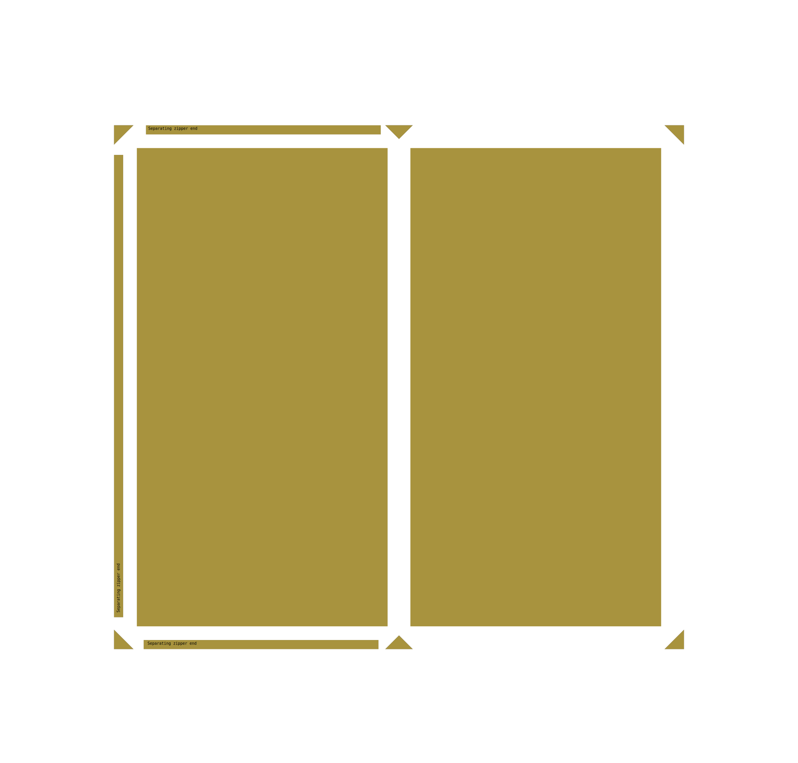

Thermal cloak¶
Materials:¶
Main fabric:
strong but thin waterproof, windproof, thermally reflective fabric
e.g. “Nylon Tarp Fabric, PU coated 70g/m2” from shelvb outdoor https://www.shelbyoutdoor.com/product_info.php?products_id=90
this is a non breathable coating, to make it more waterproof and durable than breathable membranes
Zippers:
zippers need to be separating
ideally with dual pull so they can be opened from both directions
I didn’t find ones that fit all my specifications , but these did the job:
eurokangas is not a heavy gear-oriented shop, so these are not particularly high quality. and the only have pull tabs on one side.
Thermal cloak size options¶
There are 3 main sizes of thermal cloak that make most sense to me:
150cm x 150m
This is nice because you can use the full width of a normal 150cm wide fabric roll
All three zippers are also the same length.
you won’t be able to use it as a sleeping bag cover, as it is not long enough to lie down in
approx 110cm x 210
